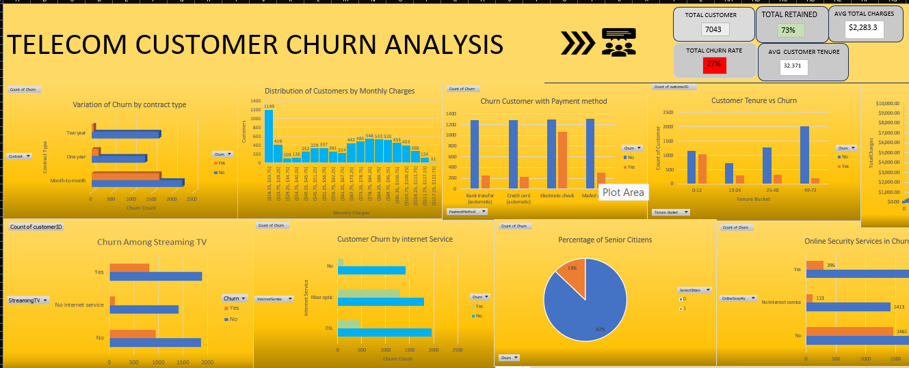
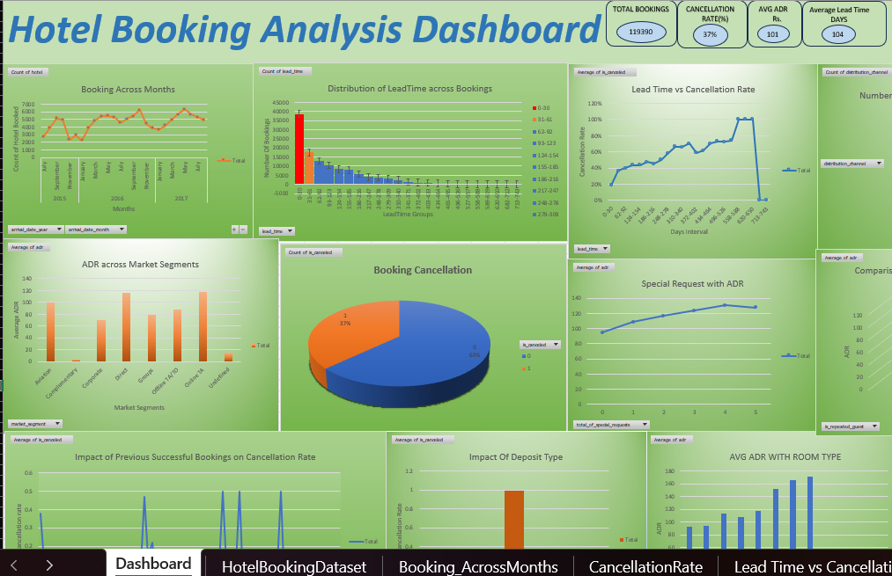

ASPIRING DATA ANALYST
Skilled in SQL, Excel, Power BI, Python, and Business Analytics with hands-on experience in dashboard development, KPI reporting, customer behavior analysis, and business insights.
A quick overview of my technical background, analytical skills, and experience in solving real-world business problems using data.
I am a Computer Science & Data Science student with hands-on experience in SQL, Excel, dashboard development, KPI reporting, exploratory data analysis, and business analytics. I enjoy working with real-world datasets to uncover trends, solve business problems, and transform raw data into actionable insights.
I have worked on projects involving customer behavior analysis, hotel booking trends, churn prediction factors, and business performance insights using interactive dashboards, SQL, and analytical techniques. Alongside data analytics, I am also comfortable with classical machine learning concepts and have hands-on experience with Scikit-learn, feature engineering, model evaluation, and data preprocessing workflows.
I also create project explanation videos to communicate analytical findings, dashboard interpretations, and business insights in a clear, structured, and easy-to-understand manner, combining technical analysis with effective storytelling.
Technical skills, analytical concepts, and tools used for data analysis, dashboard creation, business insights, and machine learning.
Real-world data analysis projects focused on business problem solving, dashboard development, KPI reporting, and actionable insights.

CUSTOMER ANALYTICS
Developed an interactive churn analysis dashboard to identify customer retention patterns, service-related churn behavior, and business factors affecting customer loss.
Understanding why customers leave telecom services and identifying factors that influence churn behavior.

BUSINESS ANALYTICS
Analyzed hotel booking behavior to identify booking trends, cancellation patterns, ADR behavior, and customer segments.
Understanding hotel booking trends and identifying factors behind cancellations and customer booking behavior.
MACHINE LEARNING
Explored customer demographics, credit limits, and behavior to identify customer patterns and influential financial indicators.
Customer demographics and credit limits influenced financial behavior patterns and customer segmentation.
Understanding customer financial behavior and identifying meaningful customer segments.
Detailed project explanation videos demonstrating business understanding, dashboard insights, analytical thinking, and data storytelling.
PROJECT EXPLANATION
Complete explanation of telecom customer churn analysis, KPI metrics, customer retention trends, SQL business questions, and dashboard insights.
Watch on YouTubePROJECT EXPLANATION
Detailed explanation of booking trends, ADR analysis, cancellation factors, lead time behavior, and business insights.
Watch on YouTubeAcademic background and specialization.
BACHELOR OF TECHNOLOGY
Quantum University, Roorkee
2024 – 2028 | CGPA: 8.69
Download my latest resume to explore my technical skills, projects, and experience.
Download Resume